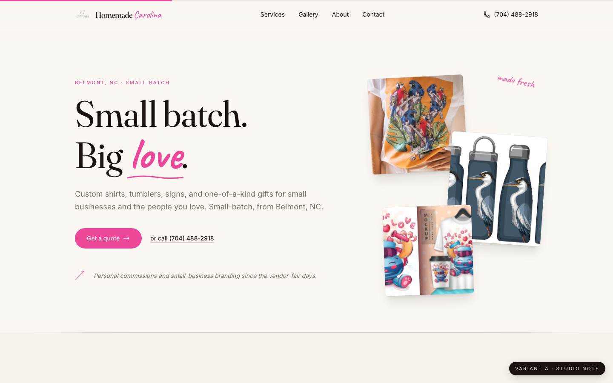

Variant A
Studio NoteEditorial workshop
Big serif display, generous whitespace, script accent for warmth. Reads as artisan, premium, considered — a craft magazine that ships product.
Display
Fraunces
Accent
Caveat
Palette
cream · ink · hot-pink
· Headline: "Made by hand. Made for you."
· Vibe: Kinfolk, gallery, Etsy boutique
· Best for: weddings, wellness, premium commissions